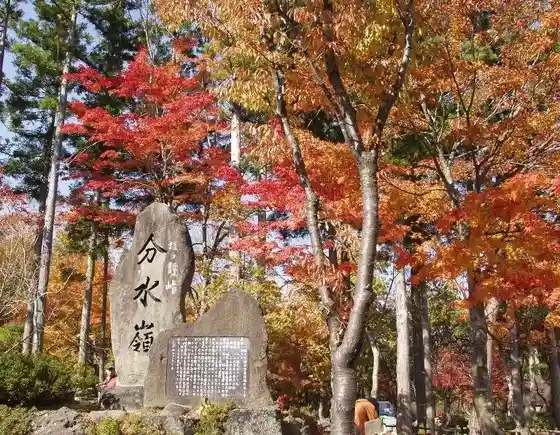
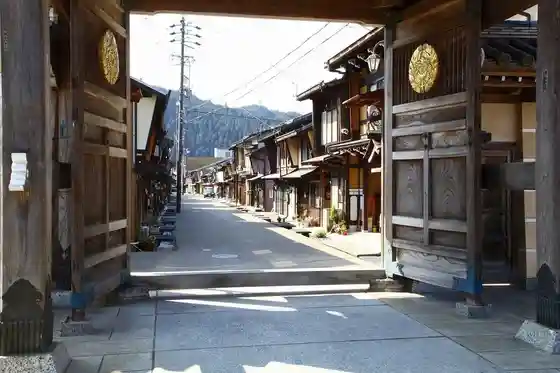
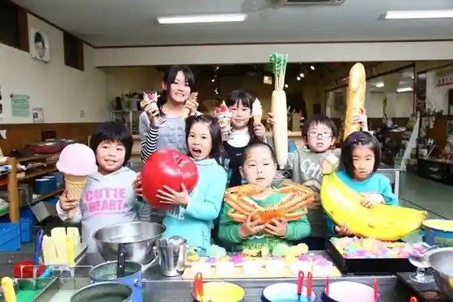

Hiruga no Highlands no Autumn Leaves
Gujo, Gifu · 0575-67-1121 · Official / source link

Sanpuru Workshop Retoroato Kan
Gujo, Gifu · 0575-67-1870 · Official / source link
Gujo Hachiman no Furui Streetscape
Gujo, Gifu · 0575-66-1239 · Official / source link

Gujo Hachiman Shiro
Gujo, Gifu · 0575-67-1819 · Official / source link
Sanpurubirejji Iwasaki
Gujo, Gifu · 0575-65-3378 · Official / source link

Gujo Odori
Gujo, Gifu · 0575-67-0002 · Official / source link
Gujo Hachiman Hakuran Kan
Gujo, Gifu · 0575-65-3215 · Official / source link
Kami to Hotoke no Sato Itoshiro
Gujo, Gifu · 0575-82-5900 · Official / source link
Bokka Village
Gujo, Gifu · 0575-73-2888 · Official / source link
Otaki Limestone Cave
Gujo, Gifu · 0575-67-1331 · Official / source link
Kokon Denju no Sato Fiirudo Museum
Gujo, Gifu · 0575-88-3244 · Official / source link
Roadside Station Meiho
Gujo, Gifu · 0575-87-2395 · Official / source link
Roadside Station Dainichidake
Gujo, Gifu · 0575-72-5007 · Official / source link
Roadside Station Hakusan Bunka Village Cho Taki
Gujo, Gifu · 0575-85-2747 · Official / source link
Roadside Station Kazuyoshi
Gujo, Gifu · 0575-77-2353 · Official / source link
Roadside Station Minami
Gujo, Gifu · 0575-79-3886 · Official / source link
Roadside Station Shirao Fureai Park
Gujo, Gifu · 0575-84-1188 · Official / source link
Daina Land
Gujo, Gifu · 0575-72-6636 · Official / source link
Takasu Su no Park
Gujo, Gifu · 0575-72-7000 · Official / source link
Su no Uebu Park Hakucho Highlands
Gujo, Gifu · 0575-86-3111 · Official / source link
Hiruga no Bunsuirei Park
Gujo, Gifu · 0575-72-5000 · Official / source link
Nagaragawa Rafuteingu
Gujo, Gifu · 0575-67-1808 · Official / source link
Yamato Onsen Yasuragi Kan
Gujo, Gifu · 0575-88-9126 · Official / source link
Hiruga no Highlands Ski Area
Gujo, Gifu · 0575-73-2311 · Official / source link
Gujo Hachiman Yana
Gujo, Gifu · Official / source link
Roadside Station Kokon Denju no Sato Yamato
Gujo, Gifu · 0575-88-2525 · Official / source link
Meiho Ski Area
Gujo, Gifu · 0575-87-2811 · Official / source link
Omodaka Ie Mingei Kan
Gujo, Gifu · 0575-65-3332 · Official / source link
Saito Art Museum
Gujo, Gifu · 0575-65-3539 · Official / source link
Kokoro no Mori Museum Yu Warabe Kan
Gujo, Gifu · 0575-65-3274 · Official / source link
Uinguhiruzu Hakucho Resort
Gujo, Gifu · 0575-86-3518 · Official / source link
Washigagaku Ski Area
Gujo, Gifu · 0575-72-5105 · Official / source link
Jion Zendera Sono
Gujo, Gifu · 0575-65-2711 · Official / source link
Bokka Village Uintashiizun
Gujo, Gifu · 0575-73-2888 · Official / source link
Howaitopia Takasu
Gujo, Gifu · 0575-72-6311 · Official / source link
Autodoain Motai Ski Area
Gujo, Gifu · 0575-88-4063 · Official / source link
Gujo Vakansu Village Ski Area
Gujo, Gifu · 0575-73-2206 · Official / source link
Bokka no Sato Onsen Maki Hana
Gujo, Gifu · 0575-73-2088 · Official / source link
Washi Baths
Gujo, Gifu · 0575-72-6511 · Official / source link
Futakoe Onsen
Gujo, Gifu · 0575-72-6011 · Official / source link
Yu no Taira Onsen
Gujo, Gifu · 0575-72-6455 · Official / source link
Hiruga no Marsh Botanical Garden
Gujo, Gifu · 0575-72-5000 · Official / source link
Komagataki
Gujo, Gifu · 0575-72-5000 · Official / source link
Fufu Taki (Gujo)
Gujo, Gifu · 0575-72-5000 · Official / source link
Kukkura Hiruga no
Gujo, Gifu · 0575-73-0101 · Official / source link
Hiruga no Highlands Kiso Uma Ranch
Gujo, Gifu · 0575-73-1061 · Official / source link
Atago Park Cherry Blossoms
Gujo, Gifu · 0575-67-1808 · Official / source link
Mei Ken Shrine no Sakura Namiki
Gujo, Gifu · 0575-88-3244 · Official / source link
Fuji Michi Cherry Blossoms
Gujo, Gifu · 0575-82-5900 · Official / source link
Kokudo 156 Gosen Soi no Sakura Namiki
Gujo, Gifu · 0575-79-3737 · Official / source link
Hakusan Bunka Museum
Gujo, Gifu · 0575-85-2663 · Official / source link
Meiho Onsen (Yu Hoshi Kan)
Gujo, Gifu · 0575-87-2080 · Official / source link
Kodakara Onsen Enku Baths
Gujo, Gifu · 0575-75-1441 · Official / source link
Togakushi Shrine no Omone Iwa
Gujo, Gifu · 0575-77-2353 · Official / source link
Otearai Falls
Gujo, Gifu · 0575-77-2211 · Official / source link
Amidagataki
Gujo, Gifu · 0575-82-5900 · Official / source link
Meiho Folk History Museum
Gujo, Gifu · 0575-87-2119 · Official / source link
Gujo Hachiman Kyu Chosha Memorial Museum
Gujo, Gifu · 0575-67-1819 · Official / source link
Igawakomichi
Gujo, Gifu · 0575-67-0002 · Official / source link
Yanaka Mizu no Komichi
Gujo, Gifu · 0575-67-0002 · Official / source link
Sogi Mizu
Gujo, Gifu · 0575-67-0002 · Official / source link
Minami Furusato Kan
Gujo, Gifu · 0575-79-3440 · Official / source link
Cho Taki Hakusan Shrine Choryu Tera
Gujo, Gifu · 0575-82-5900 · Official / source link
Hakusan Nakai Shrine
Gujo, Gifu · 0575-82-5900 · Official / source link
Kamagataki
Gujo, Gifu · 0575-79-3737 · Official / source link
Itoshiro Osugi
Gujo, Gifu · 0575-82-5900 · Official / source link
Yanogafuchi
Gujo, Gifu · 0575-79-3737 · Official / source link
Hoshimiya Shrine
Gujo, Gifu · 0575-79-3737 · Official / source link
Tennen Onsen (Manten Baths)
Gujo, Gifu · 0575-86-3487 · Official / source link
Kunida Ie no Shibazakura
Gujo, Gifu · 0575-87-2844 · Official / source link
Gujo Limestone Cave
Gujo, Gifu · 0575-68-2101 · Official / source link
Gujo Hachiman Miyama Limestone Cave
Gujo, Gifu · 0575-68-2321 · Official / source link
N.A.O. Akeno Kogen Campground
Gujo, Gifu · 0575-72-6758 · Official / source link
Kashibesso Ork Hiruga no
Gujo, Gifu · 0575-73-2425 · Official / source link
Jippu Line Adobencha Hiruga no
Gujo, Gifu · 0575-73-2311 · Official / source link
Ho Su Cherry Blossoms
Gujo, Gifu · 0575-77-2353 · Official / source link
Zembe Sakura
Gujo, Gifu · 0575-87-2844 · Official / source link
Kazuyoshi no Hotaru
Gujo, Gifu · 0575-77-2353 · Official / source link
Seiryu Nagaragawa Ayu Park
Gujo, Gifu · 0575-85-2115 · Official / source link
Hiruga no Pikunikku Garden
Gujo, Gifu · 0575-73-2311 · Official / source link
Keisho Tera Botan Sono
Gujo, Gifu · 0575-79-3737 · Official / source link
Roadside Station Seiryu no Sato Shirotori
Gujo, Gifu · 0575-82-3129 · Official / source link
Sugigase Yana
Gujo, Gifu · 0575-88-3375 · Official / source link
Nagomi Sha Seseragi
Gujo, Gifu · 0575-82-2121 · Official / source link
Heiya Jozo (Shi)
Gujo, Gifu · 0575-88-2006 · Official / source link
Shiki Shokusai Resutoran Ogatama
Gujo, Gifu · 0575-88-2525 · Official / source link
Aji Village Okumino Shirotori (Sansai Sono Gurupu)
Gujo, Gifu · 0575-84-0008 · Official / source link
Tennen Ayu Miyachika
Gujo, Gifu · 0575-79-2160 · Official / source link
Nen Kyo Tera no (Oni no Kubi)
Gujo, Gifu · 0575-77-2125 · Official / source link
Keisho Tera
Gujo, Gifu · 0575-79-2188 · Official / source link
Feafiirudo · Bai · Mariotto · Gifu Gujo
Gujo, Gifu · Official / source link
Kazuyoshi Kawa Koen Oto Campground
Gujo, Gifu · Official / source link
Kazuyoshi Otsuki no Mori Koen Campground
Gujo, Gifu · 0575-77-3288 · Official / source link
North Village Hirugano - Camping Fields
Gujo, Gifu · 090-6078-4564 · Official / source link
Washigagaku Arupusuadobencha
Gujo, Gifu · 0575-72-5511 · Official / source link
AlpenOutdooors Shirotori Fiirudo
Gujo, Gifu · Official / source link
Manten no Yado IORI × Aiken to no Zeitaku Sutei
Gujo, Gifu · 0575-86-0777 · Official / source link